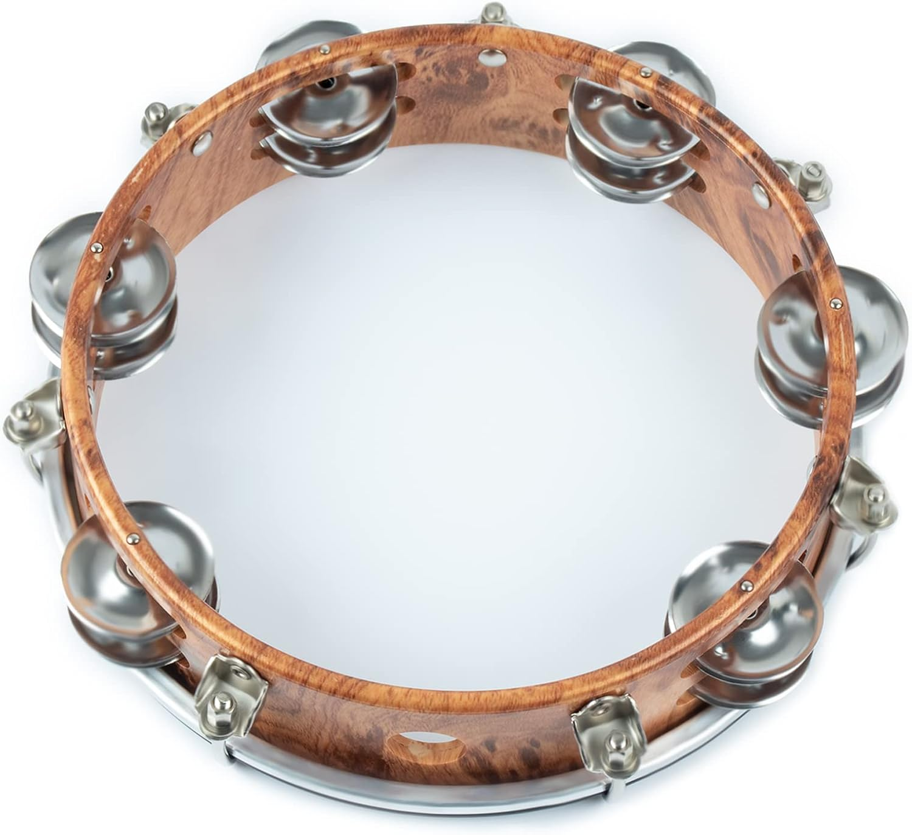

webs were spun in low Earth orbit in 1973 aboard Skylab, involving two
female European garden spiders (cross spiders) called Arabella and Anita, as part of an experiment on the Skylab 3 mission.
[47] The aim of the experiment was to test whether the two spiders would spin webs in space, and, if so,
whether these webs would be the same as those that spiders produced on Earth.
The experiment was a student project of Judy Miles of Lexington, Massachusetts.[47]
web was completed the following day.
The crew members were prompted to expand the initial protocol.
They fed and watered the spiders, giving them a house fly.[48]
first web was removed on August 13 to allow the spider to construct a second web. At first,
the spider failed to construct a new web. When given more water, it built a second web. This time, it was more elaborate than the
first. Both spiders died during the mission, possibly from dehydration.[47]

When scientists were given the opportunity to study the webs,
they discovered that the space webs were finer than normal Earth webs, and although the patterns
of the web were not totally dissimilar, variations were spotted, and there was a definite difference in the
characteristics of the web. Additionally, while the webs were finer overall, the space web had variations in thickness
in places: some places were slightly thinner, and others slightly thicker. This was unusual, because Earth webs have been observed to have thickness